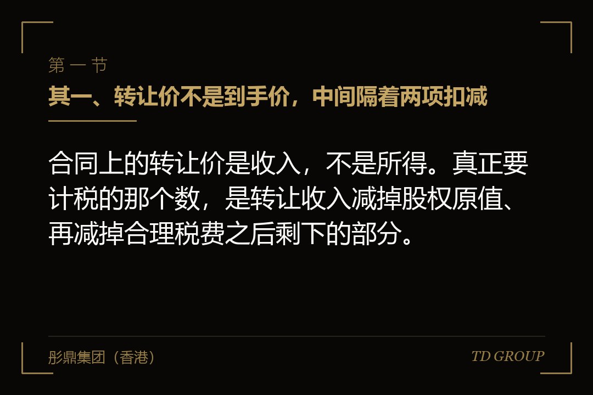
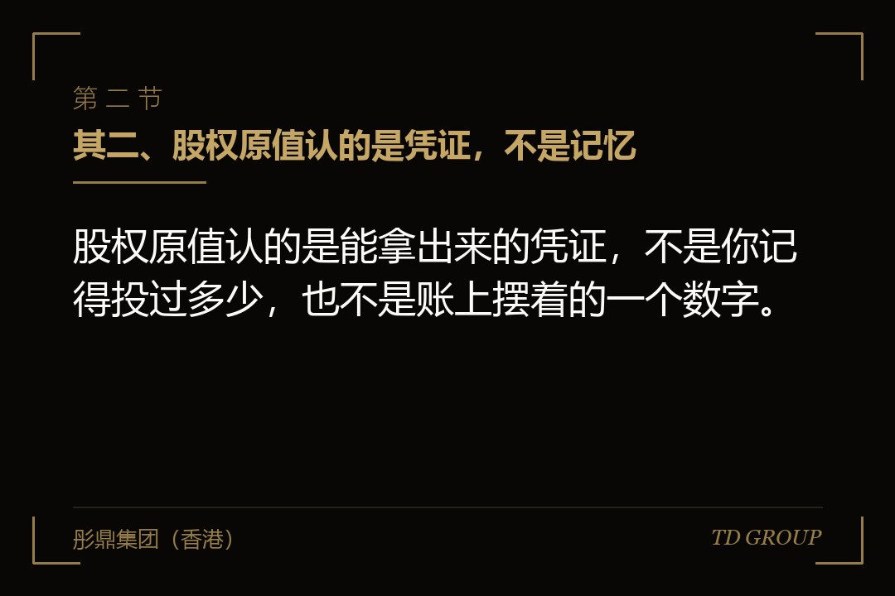
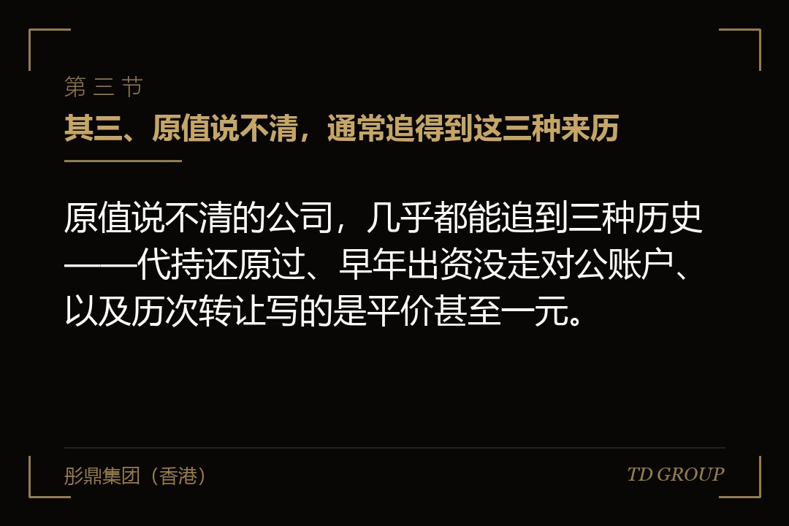

其一、转让价不是到手价，中间隔着两项扣减

结论先行：合同上的转让价是收入，不是所得。真正要计税的那个数，是转让收入减掉股权原值、再减掉合理税费之后剩下的部分。
多数转让方在谈判桌上只盯着一个数字，就是对方愿意出多少。价格谈定，心里那笔账也就算完了：这笔钱进来，还掉哪些债、留下多少现金、家里的安排怎么排。整个过程里没有一个环节会提醒他，这个数字不是他能拿走的数字。
减掉的一项是股权原值，通俗讲就是这部分股权当初的成本；另一项是这次交易中实际发生的合理税费。两项能证明的越多，落进计税口径的部分就越小；反过来，两项如果拿不出东西来支撑，剩下的就要按更大的基数去算。
所以真正决定到手多少的，往往不是价格谈得高不高，而是成本站不站得住。同样是三千万的转让价，一个人拿得出完整的出资凭证，另一个人拿不出，最后到手的钱可以差出一大截，而两份合同上的字面写法几乎一模一样。
那家特种玻璃深加工公司的创始人后来复盘，发现自己整个谈判期间跟对方来回争的是每股价格，一分一厘地磨。而真正让他损失更大的那件事——旧银行回单找不到了——从头到尾没有出现在任何一次讨论里，也没有任何一方有义务提醒他。
本质上这是一笔倒着算的账：先有收入，再看你能证明多少成本，剩下的才是计税的基础。谈价格是往前看，找凭证是往回看，两件事需要的准备时间完全不同，而后者通常要以年计。
其二、股权原值认的是凭证，不是记忆

结论先行：股权原值认的是能拿出来的凭证，不是你记得投过多少，也不是账上摆着的一个数字。凭证链断在哪一段，那一段的成本就可能认不下来。
这是整件事里最疼的一段，也是事前最少有人想到的一段。创始人心里的成本清清楚楚：某年投了多少、某年增资多少、某年从谁手里接过多少，加起来是个整数。但认定这件事的人不看这个加法，他看的是每一笔背后有没有对应的东西可查。
成套的凭证通常包括几类：设立与历次增资时的实缴出资凭证和银行进账记录，历次受让股权时的转让协议、付款凭证以及当时的完税凭证，还有能够印证这些动作的验资或审计资料、股东会决议与工商档案。它们互相印证，才构成一条能被认下来的链条。
链条的脆弱之处在于它跨的年头太长。一家公司走到有人愿意真金白银买老股的时候，往往已经十几年了。这十几年里，当年那家银行可能已经不办那项业务，经办的会计换过三任，办公室搬过两次，纸质档案在某一次搬家里被当成废纸清理掉。
凭证缺失的后果不是少认一点，而是那一段可能整体归零。认不下来的成本，在计算时就当它没有发生过——你实际掏出去的钱是真的，但在这笔账里它不存在。所以问题从来不是我亏不亏，而是我证明得了吗。
有家做连锁健身的公司，创始人当年分四次把出资打进去，其中两次走自己的对公账户、留有完整回单；另外两次为了图快，直接从个人卡上转给当时的另一位股东，再由那位股东汇总打进公司。从公司账面上看，后面这两笔是别人交的钱。
需要说明的是，可以扣除的范围、认定的具体口径与所需资料，各地掌握并不完全一致，也会随规定调整，一律以主管税务机关当时有效的规定为准。这里讲的是这条链条为什么会断，不是给某一种情形下结论。
其三、原值说不清，通常追得到这三种来历

结论先行：原值说不清的公司，几乎都能追到三种历史——代持还原过、早年出资没走对公账户、以及历次转让写的是平价甚至一元。
排在前面的是代持还原。早年因为人数限制、身份限制或者单纯图省事，把股权登记在亲属、员工或朋友名下，这在民营企业里非常普遍。后来做规范时把它还回来，从税务视角看那是一次转让，而不是物归原主。
代持怎么还原、要准备哪些文件，另有专文，本篇不展开。这里只说它留下的后果：还原之后，现在这位股东取得股权的时间与成本，认的是还原那一次的口径，而不是当年隐名出资那一次。中间的差额是从哪儿来的，是要解释的。
另一种常见来历是早年的现金出资。二十年前开厂，几个人凑钱，有人拎着现金去银行，有人直接把钱交给牵头的那位。出资的动作真实发生过，但没有留下一条今天能拿出来的路径，能翻出来的只有一份当年的验资资料，而它说明不了那笔钱是谁的。
还有一种是历次转让留下的历史。公司内部调整股权、员工进出、亲属之间划转，价格常常按注册资本对应的金额写，甚至直接写一元。当时没人觉得这是问题，反正都是自己人。但那一笔写下去，受让方的取得成本就是那个数，将来往外转的时候差额会全部现形。
有家做光伏支架的公司，创始人几年前从一位退出的合伙人手里按注册资本接过一部分股权，协议上的价格很低，当时也没有申报。后来他把这部分股权对外转让，经办人先问的不是这一次的价格，而是当年那一次为什么那么低、有没有申报过。
出资本身有瑕疵的，会让这个问题更棘手——认缴长期未缴、出资款到账后又被转出、非货币出资权属没转移，都会让原值的认定失去支点。瑕疵怎么补正另有专文，本篇只指出这一层因果：出资那头不干净，转让这头的成本就说不清。
这三种来历有个共同点：它们在发生的当年都不算问题，都是当时最省事的做法。它们变成问题的那一刻，是若干年后有人要买你的股权，而且这个人是真的会付钱的。真正付钱的交易，会把过去所有的省事一次性翻出来。
其四、报得太低会被重新核定，而核定的依据你事前不掌握
结论先行：申报的转让价格明显偏低又说不出正当理由的，主管税务机关有权不采信申报数，转而按其他方法重新核定这笔转让的收入。
不少人以为申报的价格是自己随便定的，写低一点这笔账就小一点。实际机制不是这样：申报价格只是一个起点，它明显偏低而又缺乏正当理由的，可以不被采信，收入按另一套方法确定，最后落到手上的结果与当初的设想完全不同。
什么叫明显偏低，实务中常见的情形大体是：申报价格低于这部分股权对应的净资产、低于同期或相近时点其他股东转让的价格、低于同期外部投资人进入的价格，或者干脆是无偿转让。亲属之间、关联方之间的平价转让，尤其容易被单独拿出来问。
所谓正当理由，也不是随口一说就成立。它需要能拿出东西支撑——比如企业受政策影响生产经营确实出现重大不利变化，比如按内部制度向本企业员工转让并有相应文件，比如在法定的近亲属之间转让并有身份证明。理由要有材料，而材料必须在事前就已经存在。
真正难受的地方在于信息不对称。用什么方法核定、参照哪个时点、取哪一套数据，转让方事前并不掌握，往往是收到通知才知道。也就是说签合同的时候算的是自己那套账，等到申报，算账的人换了，用的口径也换了。
有家做宠物殡葬服务的公司，两位股东之间按注册资本平价转了一笔，理由是我们俩内部调整。这个说法在他们之间成立，在申报环节不成立——它既不是有制度支撑的员工内部转让，也拿不出别的书面依据，最后收入被按另一套口径重新算了一遍。
顺带说清一件容易混的事：申报期内低价转让还可能引出会计上的股份支付处理，那是另一条线，与这里讲的收入核定不是同一件事，前者已另有专文。同样地，这类判断各地掌握不一致且会调整，具体以主管税务机关当时有效的规定为准，事前请当地税务师逐项核对。
其五、扣缴的动作在受让方那边，钱到账不等于事情完了
结论先行：转让方是纳税人，而扣缴的义务通常落在受让方身上。两个角色分在两个人身上，正是很多交易踩空的地方。
一个很常见的误解是：钱打过来了，股权过户了，这件事就结束了。实际上这两个动作之后还有一步申报，而这一步的执行人往往不是转让方本人，于是两边都默认对方会去办，结果就是谁也没办。
合同里当然可以约定税费由谁承担，那是双方之间的商业安排。但对外的法定关系不因这句约定而改变——谁是纳税人、谁负有扣缴义务，是规则定的，不是合同定的。至于税费条款怎么写、含税价与净价差在哪里，那是另一个话题，另有专文。
真实的风险因此长成这样：受让方以为付清款项就算履约完毕，转让方以为收到钱就算收尾，两边都没把申报当成自己的事。等到公司做规范、或者这部分股权再往外转的时候，这一笔没有完税记录的转让被翻出来，责任会回头找人。
后果通常不只是补上税款那么简单，还可能有滞纳金以及相应的责任认定。更麻烦的是它出现的时点——往往正好是公司最需要顺利的那个节骨眼：尽调进场、申报在即，或者新的买方正等着交割。
有家做汽车零部件模具的公司，几年前一位股东退出，受让方是公司里的另一位股东。两人在饭桌上把价格谈定，转账、签协议、办变更，一气呵成。后来公司引入外部投资人，尽调把这一笔翻了出来，双方为谁该去补这一步僵持了一个多月。
因此在交易安排里，申报这一步应当像付款和交割一样被写清楚：谁去办、什么时候办、办完之后凭证交给谁保管。它不是收尾的杂事，它是这笔交易能不能在几年之后被顺利解释的那一环。
其六、先变更还是先完税，这个顺序会卡住交割日
结论先行：工商变更与纳税申报之间存在先后关系，顺序排错了，谈得再顺的交易也会在最后一步卡住，而卡住的代价是时间。
很多交易的时间表是按付款节奏排的：签约、付首期、办变更、付尾款。税这一项常常被放在这张时间表之外，默认它是事后补办的手续。等到真的去办变更登记，才发现这一步过不去。
实务中的通行做法，是把完税或者申报的凭证作为办理股权变更登记的前置材料之一。也就是说，税这一步不是变更之后的收尾，而是变更之前的门槛。它具体排在哪里、需要哪些材料，各地要求并不完全一致，要按当地的口径提前问清。
顺序排错的代价是时间，而时间在交易里是有价格的。买方的资金有安排，卖方的用途有期限，交割往后拖一个月，双方各自的计划都要重排。更糟的情况是拖出了变数——有的交易就是在这拖出来的一个月里出的问题。
有家做安全生产培训的公司，转让双方把交割日定在季度末，理由是买方那笔资金的档期。到了办变更那一周，经办人被告知要先完成申报，而申报又需要补一份历史转让的说明，那份说明得去找十年前的当事人签字。交割日整整往后推了两个多月。
所以排时间表的时候，税这一项要往前挪，挪到跟法律文件、资金安排同一个层级上，而不是挂在最后。它要花多少时间不取决于双方谈得快不快，取决于历史资料齐不齐——而这件事只能靠提前去查。
其七、境外持股架构下是另一套题
结论先行：股权如果是通过境外主体持有的，老股转让面对的是另外一套规则，不能照搬境内的思路去推，也不该在同一份方案里混着算。
境外架构下要多考虑几层：转让发生在哪一层主体，转让方是哪里的税收居民，这笔交易在标的所在地是否构成需要在当地申报的情形，以及外汇与登记方面的配套动作。任何一层没对上，方案在纸面上再漂亮也落不了地。
这里只作方向性提示，本篇不展开。跨境结构牵涉的规则更多、变化也更快，任何一句概括性的说法都可能在某个具体案子上是错的。税收居民身份怎么判、境外持股的登记怎么办，都另有专文，也都必须按个案找持牌专业人士处理。
需要强调的是顺序：跨境的很多动作一旦做完就不可逆，事后回头调整的空间非常有限。所以这类交易的正确起手，是先把登记路径与申报义务问清楚，再去谈价格和交割日，而不是反过来把价格谈死了再找人想办法。
其八、事前真正有用的动作，是把凭证成套留住
结论先行：这件事没有事后的补救办法，只有事前的准备办法——从公司成立的头一天起，把每一次出资与每一次受让的凭证成套留住。
所谓成套，指的是每一次涉及股权的动作都留下一组能互相印证的材料，而不是零散的一两张纸。一次出资，至少要有决议、章程或协议、银行付款回单、公司这边的入账记录；一次受让，至少要有转让协议、付款凭证、当时的申报与完税凭证，以及工商变更的档案。
保存方式也要跟上。纸质件会随着搬家和人员更替消失，所以每一份都要有电子备份，集中在一个地方由固定的人管，而不是散落在历任会计各自的电脑里。银行流水尤其要及时导出并留存——账户一旦销掉，往回查会麻烦得多。
还有一个常被忽略的动作是当期就办。历次转让在当期完成申报、拿到凭证，代价是最低的；拖到多年以后回头补，不仅要补钱，还要重新证明当年发生过什么，而当年的经办人可能早就联系不上了。华尔街彤鼎俱乐部里被反复提到的一句话是：股权的历史，只有在没人追问的时候才好整理。
回到开头那家特种玻璃深加工的公司。他后来花了大半年，从旧银行的档案、当年的验资资料、几位老股东的个人流水里，一点一点把那笔增资款重新拼了出来，拼回来的部分认下了大半。但这大半年是在交割之后才开始的，而钱早就少拿了。
本质上，这一整篇讲的是同一件事：这笔税不是按你赚了多少算的，是按能被认下来的成本算的。凭证还在，这两个数字大致重合；凭证不在，它们就脱钩了——你赚了多少和你按多少缴，从此是两回事。
所以对企业主来说，真正该做的事排在很前面：趁着还找得到人、还调得出流水，把公司成立以来每一次出资与每一次转让捋一遍，缺什么现在补什么。没有交易的时候做这件事，代价几乎为零；等有人在桌子对面等着交割再做，代价就是时间，而时间在那个当口最贵。
最后再说一次：本文讲的是这笔税怎么算出来的、以及事前该把什么留住，不涉及任何降低税负的安排。具体税率、征收方式与申报要求，一律以主管税务机关当时有效的规定为准；个案差异很大，动手之前务必找当地的税务师或律师逐项核对。